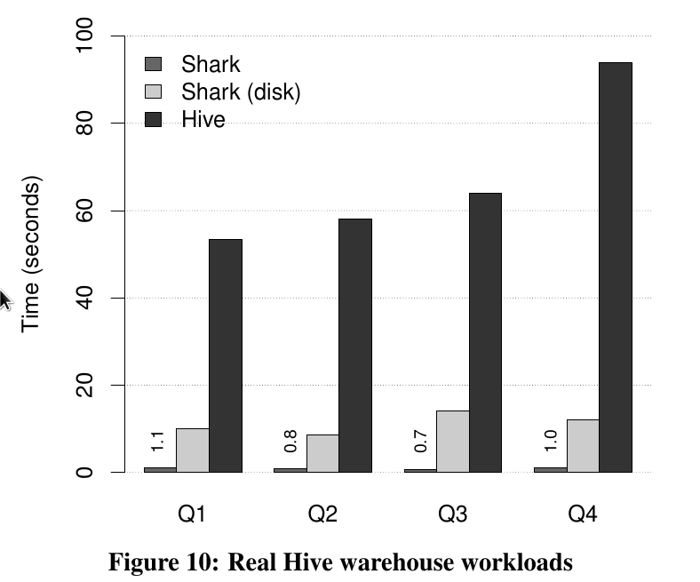

Shark
Shark Overview
一个独立，快速，类MapReduce的SQL引擎
- 基于内存存储数据，适合交互式查询
- 优秀的查询优化
- 比Hadoop快40倍以上
完全兼容Hadoop存储接口
- 可以读取或写入任何支持Hadoop的系统
- 包括HDFS，Hbase，SequenceFiles
Shark Overview
-
Shark即Hive on Spark，本质上是通过Hive的HQL解析，把HQL翻译成Spark上的RDD操作，然后通过Hive的metadata获取数据库里的表信息，实际HDFS上的数据和文件，会由Shark获取并放到Spark上运算。
-
Shark建立在Hive的代码基础上，并通过将Hive的部分物理执行计划交换出来（by swapping out the physical execution engine part of Hive）。这个方法使得Shark的用户可以加速Hive的查询
-
Shark在HQL方面重用了Hive中HQL的解析、逻辑执行计划翻译、执行计划优化等逻辑，完全兼容已有的Hive数据，metastores 和 查询( HiveQL，UDFs )
Project History
-
Spark project started in 2009, open sourced 2010
-
Shark项目开始时，Hive（MapReduce）是Hadoop上SQL的唯一选择。
-
Shark started summer 2011, alpha April 2012
-
Shark has been subsumed by Spark SQL 2014
动机
数据仓库
- 难以横向扩展
- 需要有错误恢复，任务迁移的机制
- 传统的OLAP操作无法应对日益复杂，多样的数据，需要嵌入机器学习算法等现代数据分析算法
- 处理时间长，无法做到即时交互
一些解决途径
- Tenzing， HadoopDB (基于MapReduce， 细粒度)
- Google F1， Impala (粗粒度)
- Apache Hive
Hive Architecture

Shark Architecture

为什么需要一个新的编程模型
MapReduce 编程模型被提出后被广泛使用，简化了大数据的编程
但它在一些特殊场景下表现不佳：
- 许多复杂分析的函数是迭代的，比如说机器学习和图算法。
- 实时性要求比较高的场景，要求和用户交互。
即使传统 SQL 仓库的工作负载也表现出很强的时间和空间局部性，这是因为最近的事实表数据和小维度表数据经常频繁地被读取。
Shark速度快的原因
- Spark平台提供的基于内存迭代计算(RDD)
- partial DAG execution：在一个DAG 任务运行了前几个阶段之后，Spark 可以基于观测到的统计数据，选择一个更好的连接策略或者更合适的并发度，从而能够重新优化正在运行的查询。
- 基于列的存储和压缩：把HQL表数据按列存，每列是一个array，存在JVM上，避免了序列化和反序列带来的低效，同时，也避免了JVM GC低效。

Shark速度快的原因
- 传统的MapReduce系统，就比如Hadoop，是为了运行长达数小时的批量作业而设计的，而组成作业的每个任务其运行时间则有数分钟之久，他们会在独立的系统进程中执行任务，在某些极端情况下提交一个任务的延迟非常之高。
- Spark采用了事件驱动的RPC类库来启动任务，通过复用工作进程来避免系统进程开销。它能够在一秒钟内启动上千个任务，任务之间的延时小于5毫秒，从而使得50-100毫秒的任务，500毫秒的作业变得可能。
- 亚秒级的任务使得引擎能够更好地在工作节点之间平衡任务的分配，甚至在某些节点遇到了不可预知的延迟(网络延迟或是JVM垃圾回收)的情况下面也能较好地平衡。同时对于数据倾斜也有巨大的帮助，
为什么之前的MapReduce系统比较慢
- 容错所引入的昂贵数据实体化(data materialization)开销。
- 孱弱的数据布局(data layout)，比如缺少索引。
- 执行策略的开销。
下面针对这三点说明Shark的优化。
中间结果输出
- 在MapReduce任务内部，为了防止Reduce任务的失败，Map通常会把结果存储在磁盘上(materialize)。
- 通常一些查询在翻译到MapReduce任务的时候，往往会产生多个stage，而这些串联的stage则又依赖于底层文件系统(如HDFS)来存储每一个stage的输出结果。


中间结果输出
-
Map的输出结果存储在磁盘上是为了确保能够有足够的空间来存储这些大数据批量任务的输出。而Map的输出并不会复制到不同的节点上去，因此如果执行Map任务的节点失效的话仍会造成数据丢失。由此可以推出，如果将这部分输出数据缓存在内存中，而不是全部输出到磁盘上面也是合理的。
-
Shark内部的Spark引擎扩展了MapReduce的执行模型，将MapReduce的执行模型泛化成更为通用的执行计划图(task DAG)，可以将多stage的任务串联执行而无需将stage中间结果输出到HDFS中去。
列式内存存储
内存中数据表示的3种方法:
- 内存中直接缓存磁盘上序列化后的数据. 在查询时根据需求进行反序列化, 反序列化是瓶颈.
- 将数据分区作为 JVM 对象集合存储, 可以避免反序列化, 但占用空间较大. 大量的 JVM 对象同时会导致 JVM 的垃圾收集耗时严重.
- 列示内存存储, 每一列仅创建一个 JVM 对象, 可以带来快速访问, 垃圾收集和紧凑的数据表示。
数据格式和布局
列式内存存储
反序列化成为了很大的瓶颈，在现代的商业CPUs 单核的序列化速率仅仅在 200MB/秒。
- 在Shark中采用了基于内存的列式存储结构，Shark简单地将一组列式元组存储为Spark内的一条记录，而对于列式元组内的结构则有Shark负责解析。
- 每一列仅创建一个 JVM 对象，可以带来快速的 GCs 和紧凑的数据表示。通过廉价的几乎不需要 CPU 成本的压缩技术，可以将列数据的空间占用进一步减少。
- 列式数据带来了更好的缓存行为，特别是对那些在特定列上频繁进行聚合计算的分析查询。
数据格式和布局
联合分区
- 另一个Spark独有的特性是能够控制数据在不同节点上的分区，这为Shark带来了一种新的功能：对表进行联合分区(co-partition)。
- Shark 允许两个表基于公共键进行协同分区，从而可以在后续的查询中提供快速的连接操作。它在表的创建声明中增加了 DISTRIBUTE BY 语法，用来指定对某个列进行分区。
执行策略
- partial DAG execution (PDE)，这使得Spark能够在基于数据统计的基础上改变后续执行计划。
- PDE与其他系统(DryadLINQ)的运行时执行计划图重写的不同在于：它能够收集键值范围内的细粒度统计数据；能够完全重新选择join的执行策略，如broadcast join，而不仅仅是选择Reduce任务的个数。
分区统计和映射修剪
- 为了利用列（column）在自然聚合的优势，Shark 在每一个工作节点上的的内存存储会在数据加载过程中附带收集统计信息。
- 每个分区收集来的统计信息包含了每一个列的范围, 当不同值的个数较少的时候, 会包含所有不同的值。所收集到的统计信息会被发送回驱动节点并存储在内存中, 在查询执行过程中用于修剪分区.
- 当发出一个查询后，Shark 会针对查询的目标评估所有的分区统计信息，然后修剪掉没有匹配到目标的分区。
Performance
使用了四个数据集对 Shark 进行了评估：
- Pavlo 等人的基准测试：用 2.1TB 的数据重现了 Pavlo 等人对 MapReduce 和分析数据库管理系统的比较
- TPC-H 数据集:由 DBGEN 程序产生了 100G 和 1TB 的数据集
- 1.7TB的真实的 Hive 仓库
-
100GB的机器学习数据集
-
实验显示同时使用 RDD 和上面提到的优化方法，在 SQL 查询方面，Spark 的速度可以达到Hive 的 100 倍；在运行迭代的机器学习算法方面，Spark 的速度可以达到 Hadoop 的 100 倍
- 可以在几秒钟内从查询错误中恢复
Pavlo 等人的基准测试


微基准测试

容错
在出现节点错误的情况下，对 100GB lineitem 表使用 group by 查询来测试查询性能。在将 lineitem 的数据加载到 shark 的内存后，我们切断了一台工作的机器并重新运行该查询。 Shark 能完美地从故障中恢复，并以并行的方式在其他 49 个节点上重新构建丢失的数据分区。这个恢复过程对性能有小许的影响，但比重新加载整个数据集并重新进行查询的成本 要低很多 (14 vs 34 秒)。
真实的 Hive 数据仓库查询
